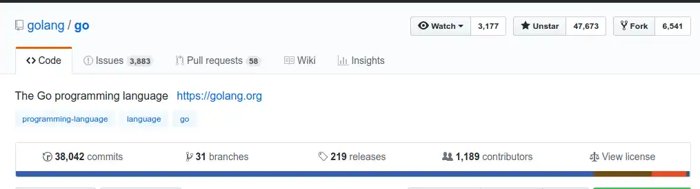
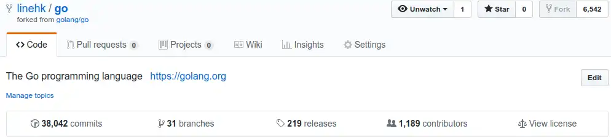
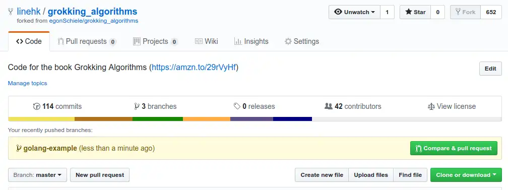
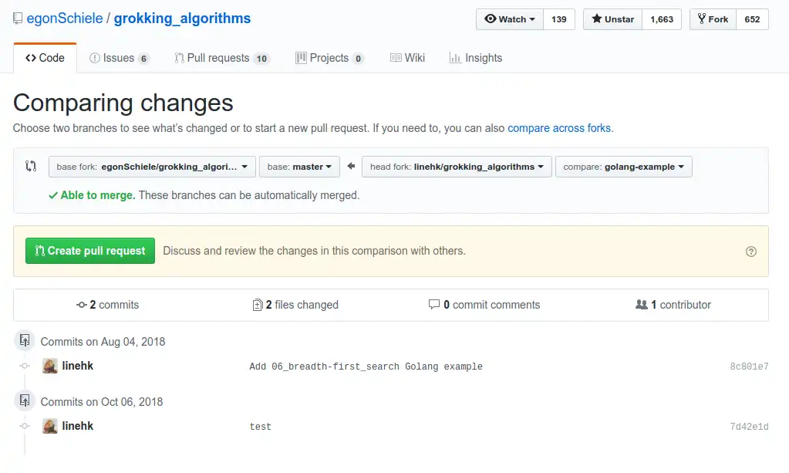
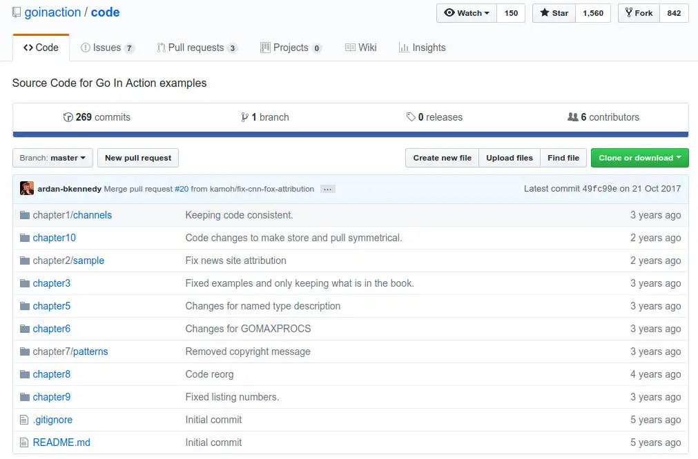

如何在 GitHub 上给开源项目贡献代码
GitHub 是什么？
GitHub 是通过 Git 进行版本控制的软件源代码托管服务。 截止到 2015年，GitHub 已经有超过 2800 万注册用户和 7900 万代码库。事实上已经成为了世界上最大的代码存放网站和开源社区。
所以，如果你想要给开源项目贡献代码或者翻译文档，学会如何使用 GitHub 来正确地贡献代码是必不可少的。
如何使用 GitHub Flow 给开源项目贡献代码
准备工作
- 关于 git 的基本操作。
- GitHub 网站的账户。
- 将示例仓库
https://github.com/golang/go记录在某处。 - 这里我们假设你的用户名为
yourname。
复制（fork）一个仓库的副本
打开示例仓库的 URL，在右上角点击 Fork 按钮后，开始等待完成。

等待的时间视仓库的大小而定。
在 fork 完成后，你应该可以在你自己的 GitHub 仓库看到同名的一个项目。
它的 URL 应该为：https://github.com/yourname/go。

发现了吗？这里 URL 的变化只不过是将原本的 golang 替换成了 yourname。
这个 fork 后的项目是你自己可以随意修改而不会影响到真正的 go 项目的。下面我们把它称之为副本仓库。
在没有示例仓库的 push 权限的情况下，想要做出的修改能够反映到示例仓库，也就是原始仓库，还需要做接下来的一些操作。
克隆（clone）副本仓库到本地
把你 fork 后的副本仓库 clone 到本地。
1 | git clone https://github.com/yourname/go go # clone 到本地的 go 目录 |
使用分支（branch）
进入仓库目录后，可以使用如下命令创建并切换到 test 分支。
1 | git checkout -b test # 创建并切换到 test 分支 |
在本地仓库提交（commit）
在这个 test 分支下经过一些修改后，你需要提交这些修改到本地仓库。
可以使用相关命令：
1 | git add -A # 添加所有文件 |
先别急着 push，我们还有个大问题要解决。
跟原始仓库（upstream）合并
前面已经说过，在副本仓库做的修改是不会影响到原始仓库的。同样，在原始仓库的更新也不会反映到副本仓库来。
在 GitHub，如果你副本仓库的进度落后于原始仓库还坚持发起 Pull Request，后果只会是被拒绝。
那么问题来了，我们应该如何同步原始仓库的更新呢？
答案是：区别于 origin，它是用来向副本仓库提交更新的远程仓库；我们添加一个 upstream，也被称为 上游 是专门用来同步原始仓库更新的远程仓库。
在默认情况下，在你 clone 后的仓库目录里，git 已经自动将 origin 和你的副本仓库关联在一起了，也就是 https://github.com/yourname/go。
你可以通过如下命令查看。
1 | git remote -vv # 两个 verbose 参数查看远程仓库 |
然后，通过如下命令添加这个 upstream，使用这个名字只是约定俗成，你可以用你觉得更好的名字来替换它。
1 | git remote add upstream git@github.com:golang/go.git # 添加 upstream 远程仓库 |
现在，我们假设在做出修改后，上游（upstream）已经更新了很多提交。
此时如果对上游的变化视而不见，强行 push 并发起 Pull Request 还是会被拒绝。
可以通过如下命令拉取并合并上游的更新：
1 | git checkout master # 切换到默认存在的 master 分支 |
也可以通过另一种方式：
1 | git checkout master # 切换到 master 分支 |
总的来说，可以把本地的 master 分支当作一个只负责从上游获取更新的分支，所有本地的改动都不会直接在 master 上面进行。
而是先将上游的 master 和本地的 master 合并，此时，本地的 master 是上游的最新版本；
再通过合并 test 和本地的 master 来完成本地改动的更新。整个过程在未开始合并之前，你的代码更新应该只会出现在 test 分支上。
注意：在使用 git rebase 相关的命令时，需要谨慎应用在已经提交的更新或远程仓库上。s
推送（push）到副本仓库
现在，我们已经完成代码的修改、上游的同步更新并且完成了合并。
接下来应该将代码 push 到副本仓库。
1 | git push origin test # 将本地 test 分支的代码 push 到 origin 的 test 分支 |
这个 push 只会更新副本仓库，并不会影响到原始仓库。
要将代码贡献到原始仓库，还要发起 Pull Request。
发起合并请求（Pull Request）
现代的 GitHub 网站已经为我们发起 Pull Request 做了大多数的幕后工作。下面分别说明两种方法：
- 在
push代码后，直接登录到 GitHub 网站，它会智能识别并弹出按钮Compare & pull request，点击后填写一些信息即可发起。

- 还有一种方式，在副本仓库的页面点击你更新的分支，再点击
New pull Request。
出现如下界面：

再点击 Create pull request 后填写一些信息即可。
接下来，原始项目的相关负责人就会审查（review）你的提交，并决定是通过还是拒绝。
当你的提交有问题时，负责人还会让你做出一些修改才给予通过。
当你发现想要对其贡献代码的开源项目已经很久没有更新时，需要谨慎一些。否则会发现在你发起
Pull Request后无人理会，做了许多无谓的工作。发生这种情况可能是负责人已经放弃了这个项目。

至此，我们已经完成使用 GitHub Flow 向开源项目贡献代码的全部步骤。